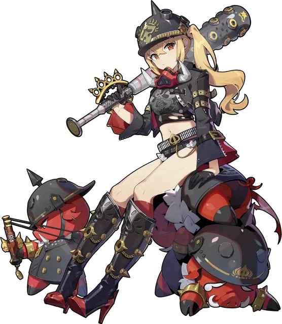

这位角色有一套已测量服装（Princess on Holiday）。本页数值是标准模型；服装数据单独保存在数据集中。
测量
| 身高 | 152 cm · 5'0" |
|---|---|
| 胸围 | 52.7 cm · 20.7 in |
| 下胸围 | 46.3 cm · 18.2 in |
| 腰围 | 39.6 cm · 15.6 in |
| 臀围 | 69 cm · 27.2 in |
| 大腿 | 41.2 cm · 16.2 in |
| 胸围差 | 6.4 cm · 2.5 in |
| 内衣尺码 | UK 19C · US 19C · EU 37C |
比例
| 腰围 / 臀围 | 0.574 |
|---|---|
| 腰围 / 身高 | 0.261 |
| 腰围 / 大腿 | 0.961 |
| 大腿 / 身高 | 0.271 |
| 大腿 / 臀围 | 0.597 |
| 胸围 / 身高 | 0.347 |
| 臀围 / 身高 | 0.454 |
名单百分位
48 位角色原始厘米数据的百分位；身高按头顶高度计算。0 = 最小，100 = 最大。
体型解读
露西身高152厘米（5'0"），和全榜平均差不多。胸围52.7厘米（UK 19C），在全榜里偏含蓄。腰围39.6厘米（腰高比0.26），在全榜里算很细的腰。往下是较窄的臀围（69厘米），配上纤细的大腿（41.2厘米）；大腿围排在全榜后10%。胸腰比1.33、臀腰比1.74，胸胯平衡度76%。整体是匀称型，臀部更有存在感。
分类: 腰围 纤细 · 臀围 窄胯 · 大腿 纤细 · 轮廓 匀称型 · 体型 上围偏重。
服装
来源
| 立绘来源 | Luciana de Montefio |
|---|---|
| 数据更新 | 2026-10-21 |
| 相似体型 | 诺姆·霍洛维尔 · 猫宫又奈 · 南宫羽 |